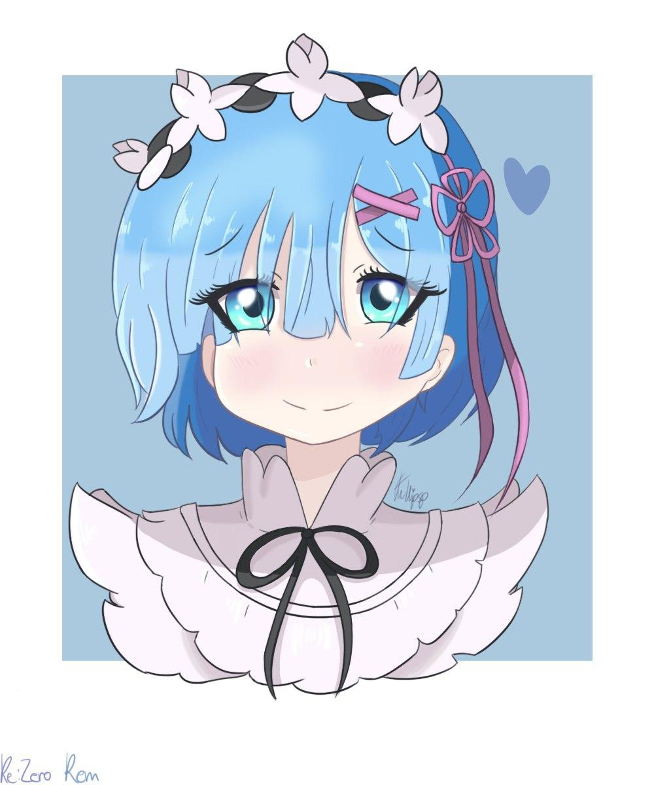

Hej! I'm a Polish artist and collector obsessed with anime characters.
I just started a Kofi!
Buy Me A Coffee
See My Pins
I just started a Kofi!
I designed this website myself ･ﾟ✧
You can find more pictures of my goodies and drawings on my socials below (ﾉ◕ヮ◕)ﾉ*:･ﾟ✧
Twitter
Reddit
Instagram
You can find more pictures of my goodies and drawings on my socials below (ﾉ◕ヮ◕)ﾉ*:･ﾟ✧